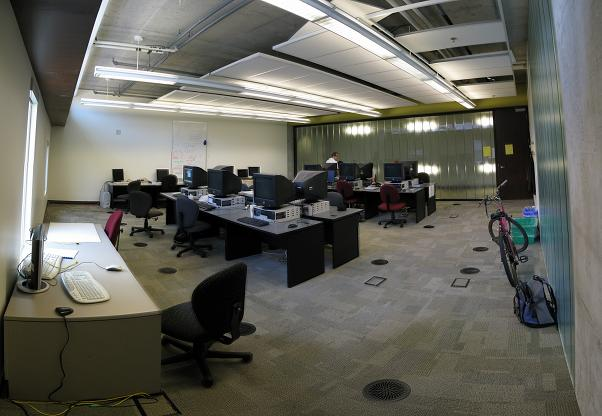

Summer's End
The last of our summer students finishes at the end of this week; here’s a few links to close off another great season:
- Dan Servos has finished his grade statistics visualization plugin for Moodle.
- Victoria Mui has been having fun with springs—her screencast is here.
- Eva Wong wishes she had a time machine (but had fun nevertheless).
- Matthew Basset thinks voiceovers are hard.
- Liz Blankenship has been thinking about simplifying tickets (a mockup is available); she has also posted some musings about the divergent evolution of Trac and DrProject.
- Qiyu Zhu has posted a screencast of the new-and-improved administration interface.
- Jeff Balogh says "thanks for all the fish" to his drag-and-drop form editor.
Thanks again, everyone—I really enjoyed working with you all.

(photo courtesy of Qiyu Zhu)